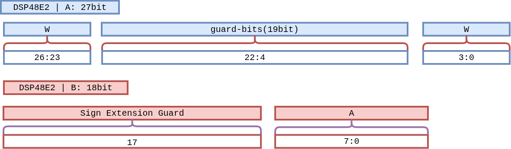

DSP48E2 W4A8 Bit Packing and Sign Recovery#
pccx v002 executes two independent MACs per DSP48E2 slice by packing two weights into a 23-bit-shifted layout on Port A. This page documents the mathematical rationale, how negative lower-channel results are handled, and the RTL-level implementation.
Note
This technique applies uniformly to both the GEMM systolic array and
the GEMV cores, and doubles the theoretical integer throughput of
the DSP48E2. Widening the weights to W5 or W6 eats into the guard
band and shrinks N_max sharply, so W4A8 is the sweet spot on
KV260.
1. Problem Statement#
DSP48E2 provides a single 27-bit × 18-bit multiply with 48-bit accumulation.
In W4A8, the weight W is 4-bit and the activation A is 8-bit, leaving substantial unused bit space on both Port A and Port B. We exploit that slack to pack two independent MACs into a single DSP via dual-channel packing.
2. Bit-Packing Layout#
{kind=link}

Figure W4A8-Layout. Port A (27 bits) holds W₁ in the top 4 bits
and W₂ in the bottom 4 bits, with 19 guard bits between them. Port B
(18 bits) holds activation A₁ in the bottom 8 bits and
sign-extends it (A₁[7]) through the upper 10 bits.#
2.1 Port A — Dual Weight (27 bits)#
Bit range |
Content |
Description |
|---|---|---|
|
W₁ (upper channel) |
4-bit signed weight. Aligned at |
|
Guard bits |
19 zero-filled bits. Absorb overflow from the lower channel’s accumulation. |
|
W₂ (lower channel) |
4-bit signed weight. |
2.3 Result Separation#
The Port A × Port B product naturally splits into two regions:
Upper 25 bits
acc[47:23]:W₁ · A₁accumulates here.Lower 23 bits
acc[22:0]:W₂ · A₁accumulates here.
3. Safe Accumulation Limit#
The maximum number of cycles the lower 23-bit region can safely accumulate before crossing into the guard band is derived below.
(We budget up to 2²² to leave headroom for the result’s sign bit.)
During those 4,096 cycles the guard band protects the upper channel.
By the same argument, the upper 25-bit region safely accumulates
W₁ · A₁ in parallel.
Important
Layers with K > 4,096 must be split (K-split) into multiple accumulation sessions. The split unit is decided at the driver / compiler level.
4. Negative Accumulation and the Borrow Effect#
When the lower channel’s result is negative, the two’s-complement hardware of DSP48E2 sign-extends through the 48-bit register. This produces a “borrow” from the upper bit region.
4.1 Mathematical Analysis#
Let the total lower-channel sum be -X. In 48-bit two’s complement:
Rewriting against the 23-bit boundary:
So:
Lower 23 bits
acc[22:0]:2²³ − X— the correct two’s complement negative value.Upper 25 bits
acc[47:23]:(∑Uᵢ) − 1— off by 1.
Key observation
The data is not lost. The upper subtraction is an exact, mathematically correct borrow from sign extension, and can be reversed in a single post-processing cycle.
4.2 Sign Recovery Logic#
The lower channel’s sign is read directly from a single bit:
acc[22].
acc[22] == 1: lower channel was negative → upper lost 1 → restore.acc[22] == 0: lower channel non-negative → no restoration needed.
Recovery runs exactly once, in the final extraction cycle after all accumulation completes.

Figure Sign-Recover. On the accumulate_done cycle the upper
channel adds acc[22] back in; the lower channel keeps its
23-bit two’s-complement value as-is.#
// Sign bit of the lower 23-bit accumulation (1: negative, 0: non-negative)
wire lower_sign = acc[22];
// Executed only on the accumulate_done cycle
always @(posedge clk) begin
if (accumulate_done) begin
// Upper channel: add 1 back if the lower channel was negative
PE[1][2] <= acc[47:23] + lower_sign;
// Lower channel: keep the 23-bit two's-complement result
PE[1][1] <= acc[22:0];
end
end
5. Full Operation Sequence#
flowchart LR
PACK["Weight Pack<br/>{W₁ | guard | W₂}"] -->|Port A 27b| DSP[DSP48E2<br/>M·P reg]
ACT["Activation Stream<br/>A₁ + sign ext"] -->|Port B 18b| DSP
DSP -->|48-bit ACC| ACCR{"N ≤ 4,096?"}
ACCR -- yes --> LOOP[Continue Accumulate]
LOOP --> DSP
ACCR -- done --> SREC["Sign Recovery<br/>acc[47:23] + acc[22]"]
SREC --> OUT[/Upper ch · Lower ch/]
6. Design Benefits#
Aspect |
Effect |
|---|---|
DSP utilization |
1 DSP = 2 MAC → theoretical peak doubled. |
Extra logic cost |
One 1-bit adder plus a 23-bit comparator per PE. |
Pipeline impact |
Recovery runs once per accumulation, so throughput is unaffected. |
Generality |
Applies to any signed 4-bit × 8-bit multiplication, not just W4A8. |
7. Limits and Trade-offs#
No W-width extension: pushing to W5 or W6 runs out of guard bits and collapses
N_max. Given DSP48E2’s shape, W4A8 is optimal on KV260.Assumes signed activations: if A is unsigned, the guard-bit strategy shifts; the current design assumes INT8 signed activations.
Shared scale constraint: W₁ and W₂ are always multiplied by the same A, so the technique only helps when both channels share a common output location. This aligns naturally with GEMM’s M-axis tiling.
See also
The PE implementations that use this technique live in GEMM Core (Systolic Array) and GEMV Core. For the resulting system-level speedup, see the “3.125×” analysis in Design Rationale: v001 → v002.